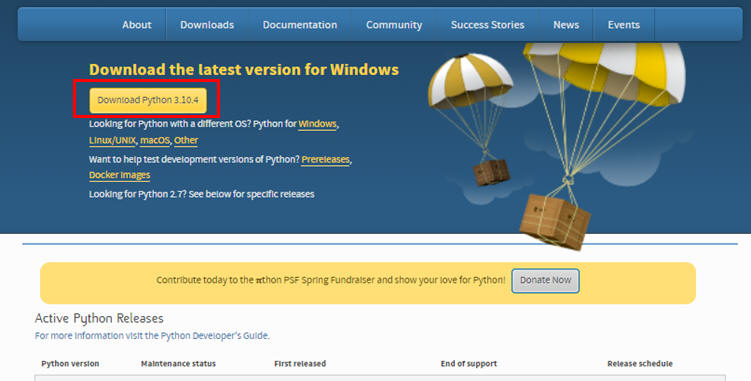

|
NOTE 本ページは i-PRO株式会社 の有志メンバーにより記載されたものです。 本ページの情報は ライセンス に記載の条件で提供されます。 |
Windows へ Python をインストールする手順を記載します。
(1)
https://www.python.org/downloads/ からインストーラーをダウンロードします。
ここでは本書記載時の最新版である「3.10.4」をダウンロードします。
作成するプログラムによっては特定バージョンを使う必要がある場合があるので、必要に応じて古いバージョンのインストーラーを取得します。

(2)
ダウンロードしたファイルをダブルクリックするなどにより実行します。
下図画面を表示したら、「Add Python 3.10 to PATH」にチェックを入れて「Install Now」をクリックします。
(3)
下図画面を表示したらインストールを完了です。「Close」ボタンをクリックして終了です。
Python の動作確認を簡単に行ってみます。
① コマンドプロンプト（「スタートメニュー」の「Windowsシステムツール」内にあります）を起動します。
② python と入力しリターンを押すと、下記のように表示されることを確認します。( >>> がPython入力モードの表示です。）
③ Python入力モードでいくつか計算式やプログラム（下図例を参照）を入力してみます。
これらが同様に動作すれば Python を使用できる状態になっています。
④ exit() と入力して［Enter］を押すと Python 入力モードを終了します。（上図参照）
続けて exit と入力して［Enter］を押すとコマンドプロンプトを終了します。
テキストファイルに記載した Python プログラムを実行する例を簡単に記載します。
① メモ帳などテキストを記載できるツールを起動し、プログラムを記載します。下図は例です。
② 任意の場所へ保存します。下図例では "hello.py" というファイル名で保存しました。
・ファイル名の拡張子を .py とします。
・エンコードを "UTF-8"
とします。（メモ帳はデフォルトが UTF-8 のようです）
③ コマンドプロンプトを起動し、②で保存した場所へ移動します。
（エクスプローラーを起動してプログラムを保存した場所を開き、その状態で上部パス表示部分に "cmd"
を入力後に［Enter］を押す、という方法も便利です。同じ結果になります。）
④ プログラムを実行します。
コマンドプロンプトから python hello.py
と入力することで先ほど保存した Python プログラムを実行することができます。
（"hello.py"
の部分は実際に保存したファイル名へ変えて入力してください。）
以上で Windows 環境への Python インストールおよび初期動作確認などの説明を終了させていただきます。
本ページの情報は、特記無い限り下記ライセンスで提供されます。
|
Copyright 2022 i-PRO Co., Ltd. Licensed under the Apache License, Version 2.0 (the "License"); you may not use this file except in compliance with the License. You may obtain a copy of the License at http://www.apache.org/licenses/LICENSE-2.0 Unless required by applicable law or agreed to in writing, software distributed under the License is distributed on an "AS IS" BASIS, WITHOUT WARRANTIES OR CONDITIONS OF ANY KIND, either express or implied. See the License for the specific language governing permissions and limitations under the License. |
| 2022/5/26 | - | 新規作成, | 木下英俊 |
i-PRO - Programming Items トップページ